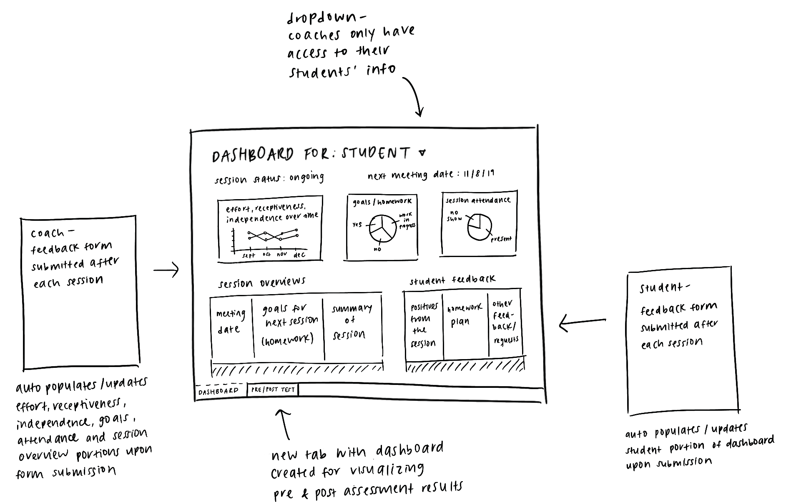

An implementation of an automated reporting dashboard to visualize Pre- and Post- assessment data from Academic Coaching sessions
SYSTEM
Google Suite
TERM
Spring 2019
MENTORS
Michael P.
TC Eley
Up until a few years ago, Carnegie Mellon University’s Academic Development program used a paper system to keep track of Academic Coaching sessions, feedback, and assessments. Since then, the department has digitized their data collection processes by creating a Google Form and Sheet system to keep track of student responses after each coaching session.
PROJECT CHALLENGE
Academic Coaching is a program that helps students acquire more effective and efficient study skills. Student Academic Coaches conduct workshops and individualized sessions to help other students focus on skills such as time management, avoiding procrastination, forming productive habits, preparing for exams, taking lecture notes, and more.
When students join the program, they are asked to fill out a survey on their study habits and attitudes toward academic achievement. The survey is based on the Motivated Strategies for Learning Questionnaire (MSLQ) publication and covers topics such as mindset, belongingness, self-efficacy, and types of study skills. At the end of their sessions, usually at the end of the semester, the same survey is completed.
At the time, the data from pre- and post- assessments was not being utilized in any way. However, we (I along with the Department Leads) recognized the potential to leverage the information to measure the effectiveness of the Academic Coaching program – both holistically and for individual students. We decided to create a system to visualize the assessment results and integrate it within the reporting dashboard for each student.
Visualizing Results
The initial phase of this project involved researching and understanding the problem space. Using the publication from the National Center for Research to Improve Postsecondary Teaching and Learning, I familiarized myself with what the assessment measures as well as how the attributes relate and interact with each other, and what factors contribute most to academic success.
Sample statements from the pre- and post- assessment:
no longer have access to the systems so please accept hand-drawn diagrams ~
for each category, we also included a description of the category and its importance in academic development, as well as additional links for more information
Implementation & Integration
One of the main priorities of this project was to provide additional information about individual students through the pre- and post- assessments, at no additional cost / effort by the coach or the department. This meant the visualization created needed to operate within the pre-existing system and populate automatically when the assessment is submitted.
Since the original systems were created using Google Forms and Google Sheets, it only made sense to integrate the new visualization as a part of the reporting Sheet.
An overview of the existing system is as follows:

The new visualization we created would exist on another tab of the same reporting Sheet, so the information would all be in one centralized place. This was implemented through linking data from different Google Sheet files and creating graphs according to the correct data. Because of this system, the information would automatically populate when the Forms are submitted.
Conclusion
Through the addition of the visualizations of the Pre- and Post- assessments in the reporting dashboard, both Academic Coaches and students in the program can gain an understanding of the impact of the coaching sessions. Looking solely at the Pre- assessment results, coaches can prepare sessions based on the individual’s needs and areas for potential growth. Comparing Pre- and Post- assessment visualizations allows the department to understand trends across students in the program and identify which areas students are improving the most and which should be focused on more.
This project allowed me to experience first-hand the effects of a complete digital transformation and help create something tangible that would allow data to push forward the operations of an organization by tracking results and identifying areas for improvement. I witnessed the lingering effects of the inefficiency of a paper system, and saw how much more efficient and impactful a digital process is.